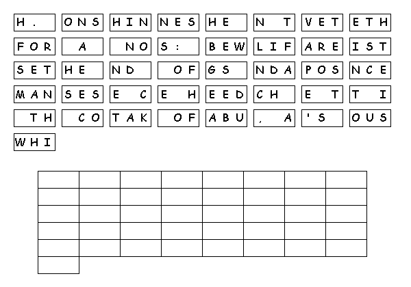

This Week: Hosea 11:1-11 and Psalm 107:1-9, 43 or Ecclesiastes 1:2, 12-14; 2:18-23 and Psalm 49:1-12, Colossians 3:1-11, Luke 12:13-21
Middle-School Pew-work
Does
having too much “stuff” around keep us from having a
good relationship with God? Why or why not?
________________________________________________________________________
________________________________________________________________________
________________________________________________________________________
________________________________________________________________________
________________________________________________________________________
________________________________________________________________________

Created
by Puzzlemaker
at DiscoverySchool.com
Next week:Isaiah 1:1, 10-20 and Psalm 50:1-8, 22-23 or Genesis 15:1-6 and Psalm 33:12-22, Hebrews 11:1-3, 8-16, Luke 12:32-40